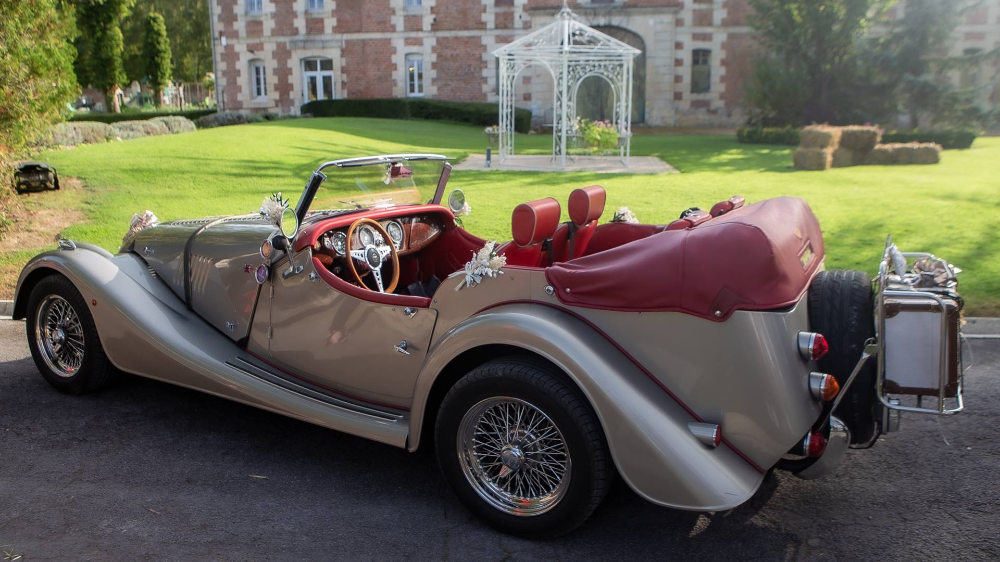
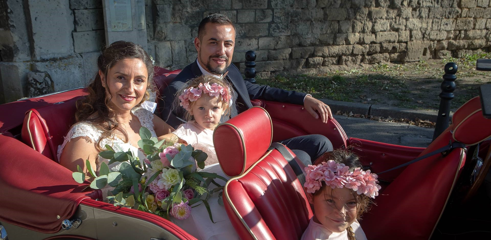
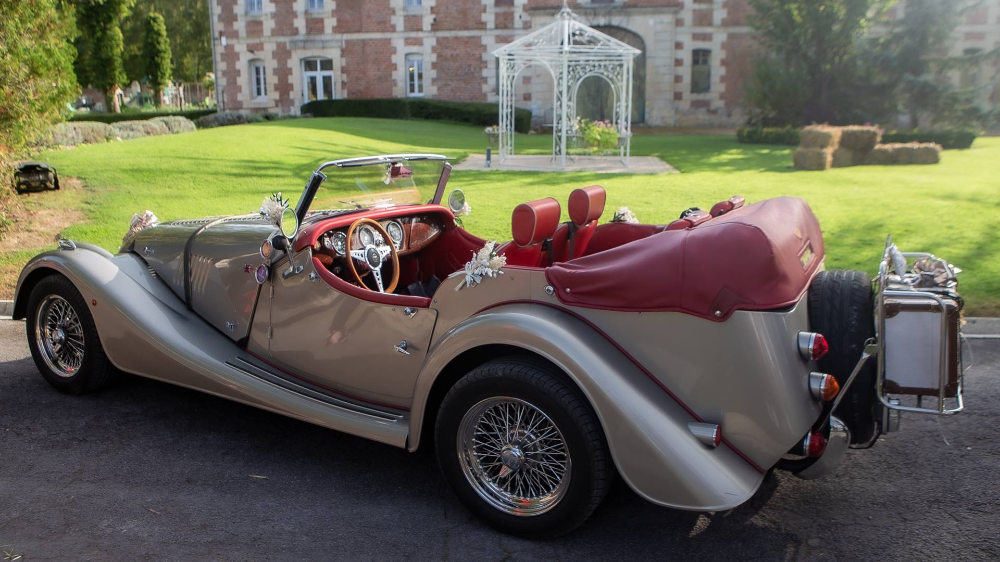
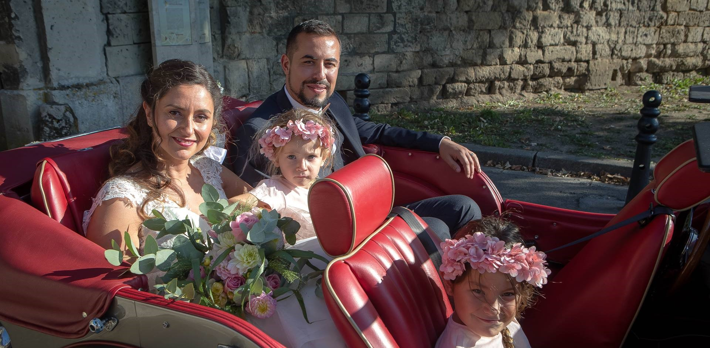
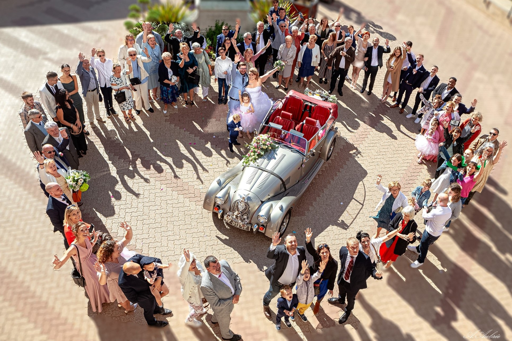

Offrez-vous un événement d’exception .
En organisant votre mariage, vous vous attendez certainement à rendre ce jour prestigieux et plein d'originalité : il est fondamental de penser aux moindres détails. Soignez le moment de votre arrivée : c'est la meilleure manière d'éblouir vos invités et de leur laisser un souvenir mémorable. Avec la splendide voiture de collection et de prestige proposée par Antoine Aubree, vous allez vous démarquer .

Location de voiture avec chauffeur
Services proposés Antoine Aubree vous accompagnera au volant de ce magnifique décapotable modèle 1936 Morgan Plus4 Tourer 4 places, dont vous garderez un souvenir inoubliable par un reportage photo.
C’est un cabriolet atypique en parfait état donnant une note particulière d’élégance à votre cérémonie.
Il est très apprécié lors des Mariages à forte image de rêve en vous laissant ainsi qu'à votre entourage un souvenir inoubliable.
Le véhicule est mis à votre disposition pour un forfait de 120 kilomètres et de 5 heures dans le sud de l'Oise et alentours (dans la Somme, l'Aisne, le Val-d'Oise et sur Paris) à partir de 480 € y compris un reportage photo spécifique personnalisé par mes soins étant photographe averti.
Antoine reste à votre disposition pour plus de détails en vous proposant une prestation à la carte (décoration, fleurissement et tenue du chauffeur ...) .

Un look de sportives d’antan .
le 27 décembre 1936 Morgan présentait sa première voiture à 4 roues le "4/4". Le nom venait de 4 roues et 4 cylindres La production 4/4 s'est étendue sur 82 ans ce qui en fait la plus longue série de voitures de tourisme de l'histoire.
C’est une voiture qui comprend une structure en bois de frêne et des panneaux de carrosserie en alu comportant des châssis en alu ou en acier pour être plus solide La voiture Morgan est fabriquée à la main Morgan Motor Company continue de produire ses véhicules d'exception dans la pure tradition britannique.
Morgan continue de façonner des voitures de sport et de prestige .
